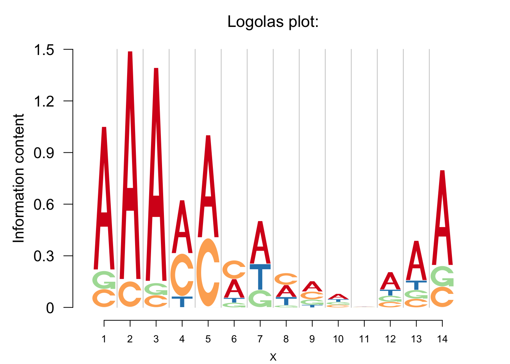

Last updated: 2017-09-13
Code version: 345e7ba
Consensus sequence is the summarized patten of multiple sequence alignment of nucleotide or amino acid. For the nucleotide, the consensus sequence is usually coded by the IUPAC, in which nucleobases are represented by the first letters of their names: [G]uanine, [C]ytosine, [A]denine, and [T]hymine. For the amino acid sequence, the Prosite pattern syntax is commonly used.
Based on the logo heights from the negative logo plot, we develop a way to detect and give the consensus sequence and it could provide more information about the conservation of residues, especially for the nucleotide. Some existing methods, such as the getIUPAC in the atSNP package, only give the enrichment of the residues and hence are biased. However, our method could give both the enrichment and depletion bases.
For the nucleotide, aprat from the standard IUPAC code, we denote the depleted bases by lower cases of the corresponding IUPAC code.
GetMotif=function(pwm,seqmotif,bg=NULL){
library(Logolas)
if(is.null(bg)){bg=rep(1/nrow(pwm),nrow(pwm))}
ll=get_logo_heights_log(pwm,depletion_weight = 0,scale = 1,bg=bg)
pp=c();for (i in 1:ncol(pwm)){pp=cbind(pp,ll$pos_ic[i]*ll$table_mat_pos_norm[,i])};
nn=c();for(i in 1:ncol(pwm)){nn=cbind(nn,ll$neg_ic[i]*ll$table_mat_neg_norm[,i])};
#codes=matrix(nrow = length(bases),ncol = ncol(pwm))
code=c()
if(seqmotif=='nucleotide'){
bases=c('A','C','G','T')
based=tolower(bases)
for(i in 1:ncol(pwm)){
codes=c()
#stringent on calling just A,C,G,T
#based on (0.6,0.4,0.1,0.1)
#if one is larger than 1.1, call it enrichment
if(sum(pp[,i]>=0.8)==1){codes=c(codes,bases[which.max(pwm[,i])])}
#codes[1,i]=bases[which.max(pwm[,i])]
#based on (0.4,0.4,0.1,0.1)
if(sum(pp[,i]>=0.4)==2){codes=c(codes,paste(bases[pp[,i]>=0.4],collapse =''))}
#codes[2,i]=paste(bases[pp[,i]>=0.4],collapse ='')
#based on (0.8,0.1,0.1,0)
if(sum(nn[,i]>=0.45)==1){codes=c(codes,based[nn[,i]>=0.45])}
#codes[3,i]=based[nn[,i]>=0.45]
#based on (0.3,0.3,0.2,0.2)
#else{codes[4,i]='N'}
if(is.null(codes)){codes=c(codes,'N')}
if(length(codes)>1){codes=paste0('[',paste0(codes,collapse = '|'),']',sep='')}
code[i]=codes
}
}
if(seqmotif=='protein'){
bases=rownames(pwm)
based=tolower(bases)
for(i in 1:ncol(pwm)){
codes=c()
#based on (0.6,0.4)
if(sum(pp[,i]>=1.1)>0){codes=c(codes,paste(bases[pp[,i]>=0.4],collapse =''))}
if(sum(nn[,i]>=0.45)>0){codes=c(codes,paste(based[nn[,i]>=0.4],collapse =''))}
if(is.null(codes)){codes=c(codes,'N')}
if(length(codes)>1){codes=paste0('[',paste0(codes,collapse = '|'),']',sep='')}
code[i]=codes
}
}
return(paste(code,collapse=' '))
}The way we give the consensus sequence is intuitive if we have a look at the logo plot.
pwm=matrix(c(0.8,0.1,0.1,0,0.9,0.1,0,0,0.9,0.05,0.05,0,0.5,0.4,0,0.1,0.6,0.4,0,0,0.4,0.4,0.1,0.1,0.5,0,0.2,0.3,0.35,0.35,0.06,0.24,0.4,0.3,0.2,0.1,0.4,0.2,0.2,0.2,0.28,0.24,0.24,0.24,0.5,0.16,0.17,0.17),nrow = 4,byrow = F)
rownames(pwm)=c('A','C','G','T')
colnames(pwm)=1:ncol(pwm)
color_profile=list("type" = "per_row","col" = RColorBrewer::brewer.pal(4,name ="Spectral"))
GetMotif(pwm,'nucleotide')[1] "[A|t] A A [AC|g] [A|AC] AC c g t N N A"logomaker(pwm,color_profile = color_profile,frame_width = 1)
#nlogomaker(pwm,logoheight = 'log',color_profile = color_profile,frame_width = 1,control = list(depletion_weight=0,logscale=1))Also, it works well with the protein seqence.
counts_mat <- rbind(c(0, 0, 100, 1, 2), c(4, 3, 30, 35, 2),
c(100, 0, 10, 2, 7),rep(0,5),
c(4, 2, 3, 7, 70), c(1, 8, 0, 60, 3),
rep(0, 5), c(4, 2, 100, 1, 1),
c(12, 8, 16, 7, 20), c(55, 0, 1, 0, 12),
rep(0,5), c(rep(0,3), 20, 0),
rep(0,5), c(0, 0, 30, 0, 22),
c(1, 0, 12, 3, 10), rep(0,5),
c(0, 1, 0, 34, 1), c(0, 1, 12, 35, 1),
c(0, 30, 1, 10, 2), c(0, 1, 4, 100, 2))
rownames(counts_mat) <- c("A", "R", "N", "D","C", "E", "Q", "G",
"H", "I", "L", "K", "M", "F", "P", "S",
"T", "W", "Y", "V")
colnames(counts_mat) <- c("Pos 1", "Pos 2", "Pos 3", "Pos 4", "Pos 5")
GetMotif(counts_mat,'protein')[1] "RNCGHI RCEGHTWYV ARNGHFPW REKTWYV NCHIFP"cols1 <- c(rev(RColorBrewer::brewer.pal(12, "Paired"))[c(3,4,7,8,11,12,5,6,9,10)],
RColorBrewer::brewer.pal(12, "Set3")[c(1,2,5,8,9)],
RColorBrewer::brewer.pal(9, "Set1")[c(9,7)],
RColorBrewer::brewer.pal(8, "Dark2")[c(3,4,8)])
color_profile <- list("type" = "per_row",
"col" = cols1)
logomaker(counts_mat,
color_profile = color_profile,
frame_width = 1)
sessionInfo()R version 3.3.3 (2017-03-06)
Platform: x86_64-apple-darwin13.4.0 (64-bit)
Running under: macOS Sierra 10.12.5
locale:
[1] en_US.UTF-8/en_US.UTF-8/en_US.UTF-8/C/en_US.UTF-8/en_US.UTF-8
attached base packages:
[1] stats graphics grDevices utils datasets methods base
other attached packages:
[1] Logolas_1.1.2
loaded via a namespace (and not attached):
[1] Rcpp_0.12.12 digest_0.6.12 rprojroot_1.2
[4] grid_3.3.3 backports_1.0.5 git2r_0.18.0
[7] magrittr_1.5 evaluate_0.10 stringi_1.1.5
[10] LaplacesDemon_16.0.1 rmarkdown_1.6 RColorBrewer_1.1-2
[13] tools_3.3.3 stringr_1.2.0 parallel_3.3.3
[16] yaml_2.1.14 SQUAREM_2016.8-2 htmltools_0.3.6
[19] knitr_1.16 This webpage has been developed using RStudio's R Markdown and John D Blischak's workflowr package.